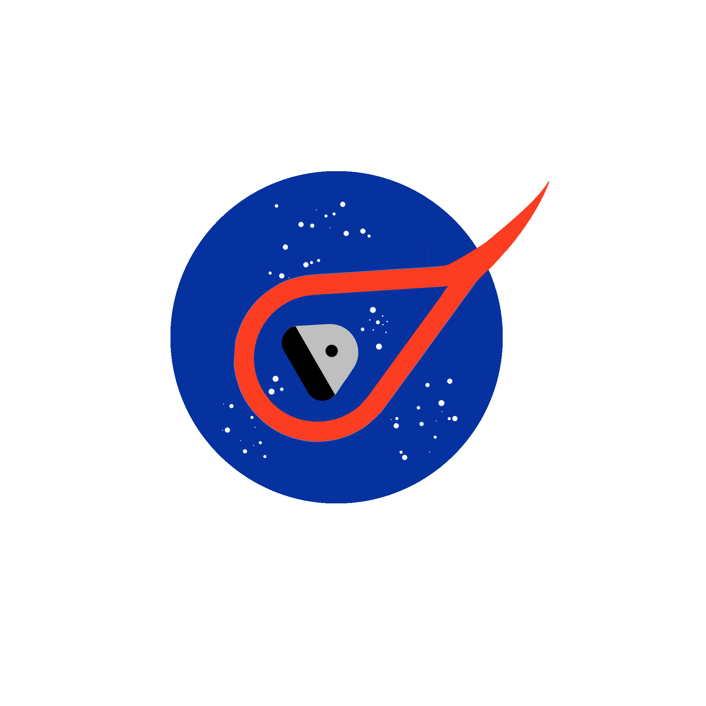
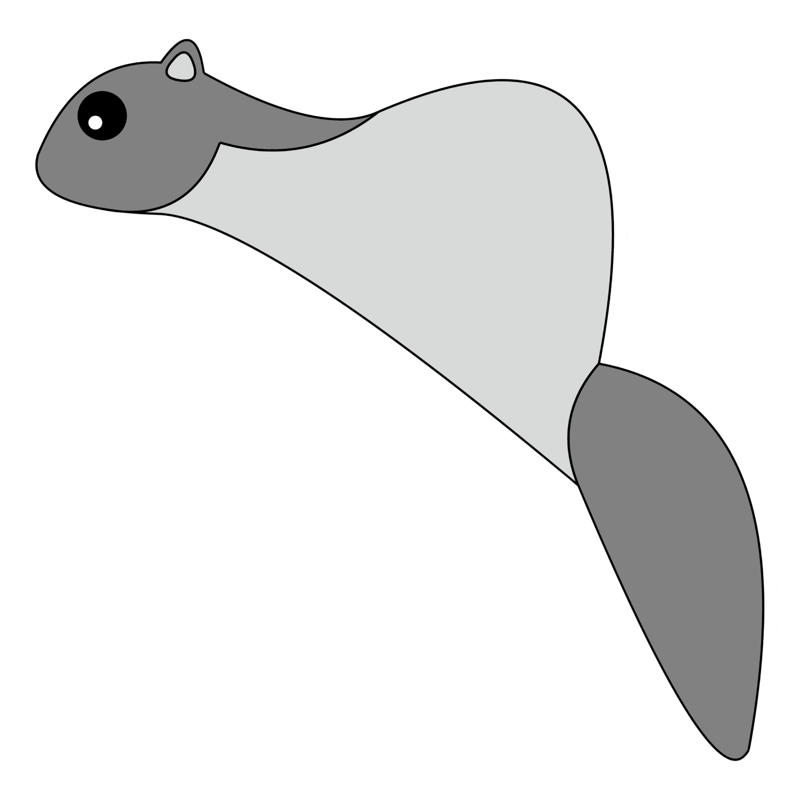
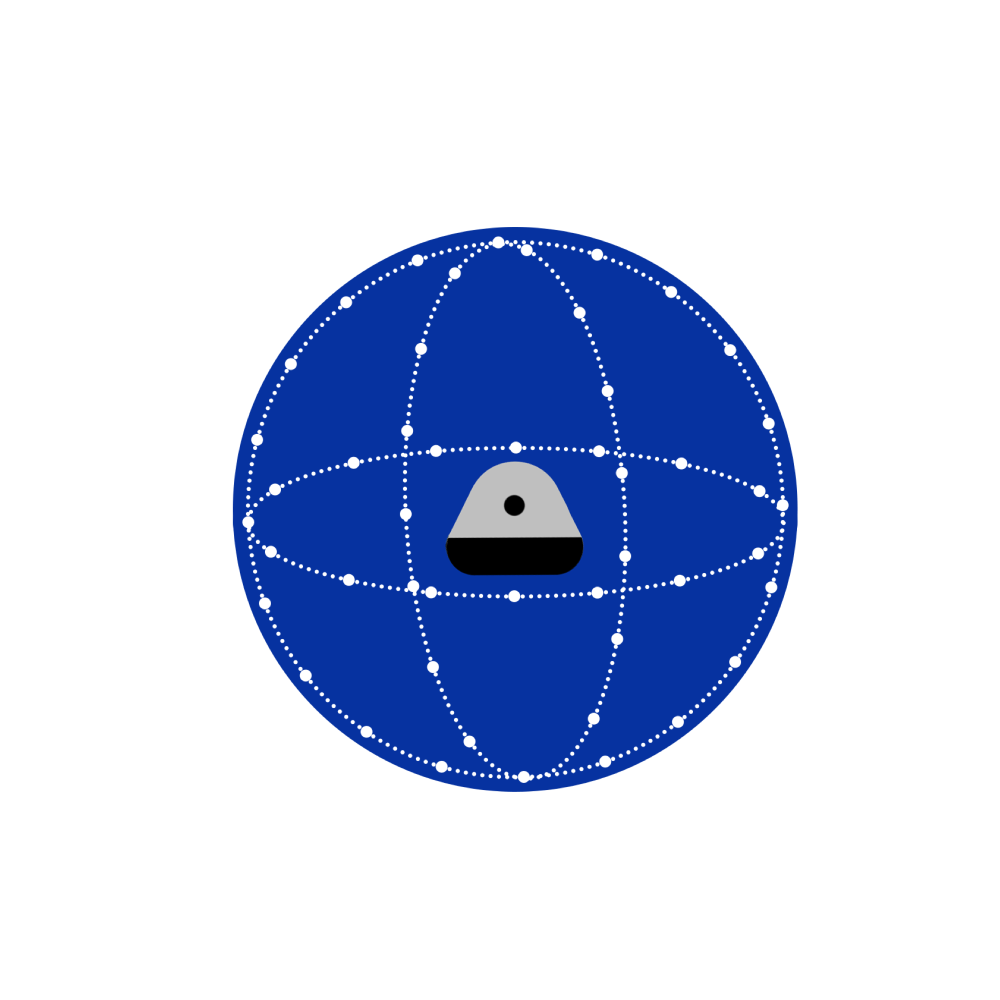
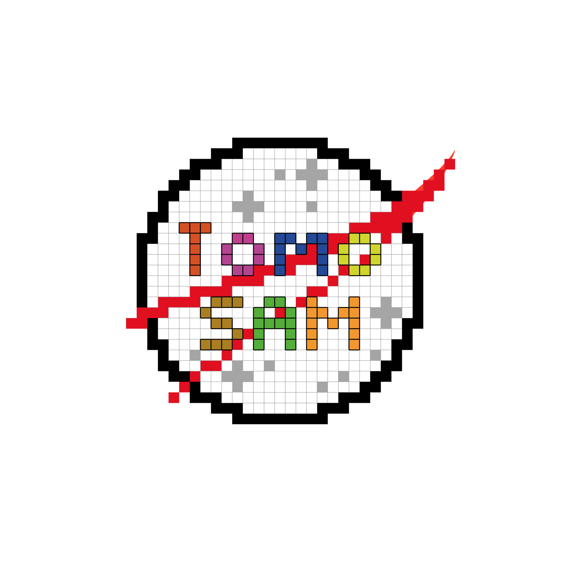
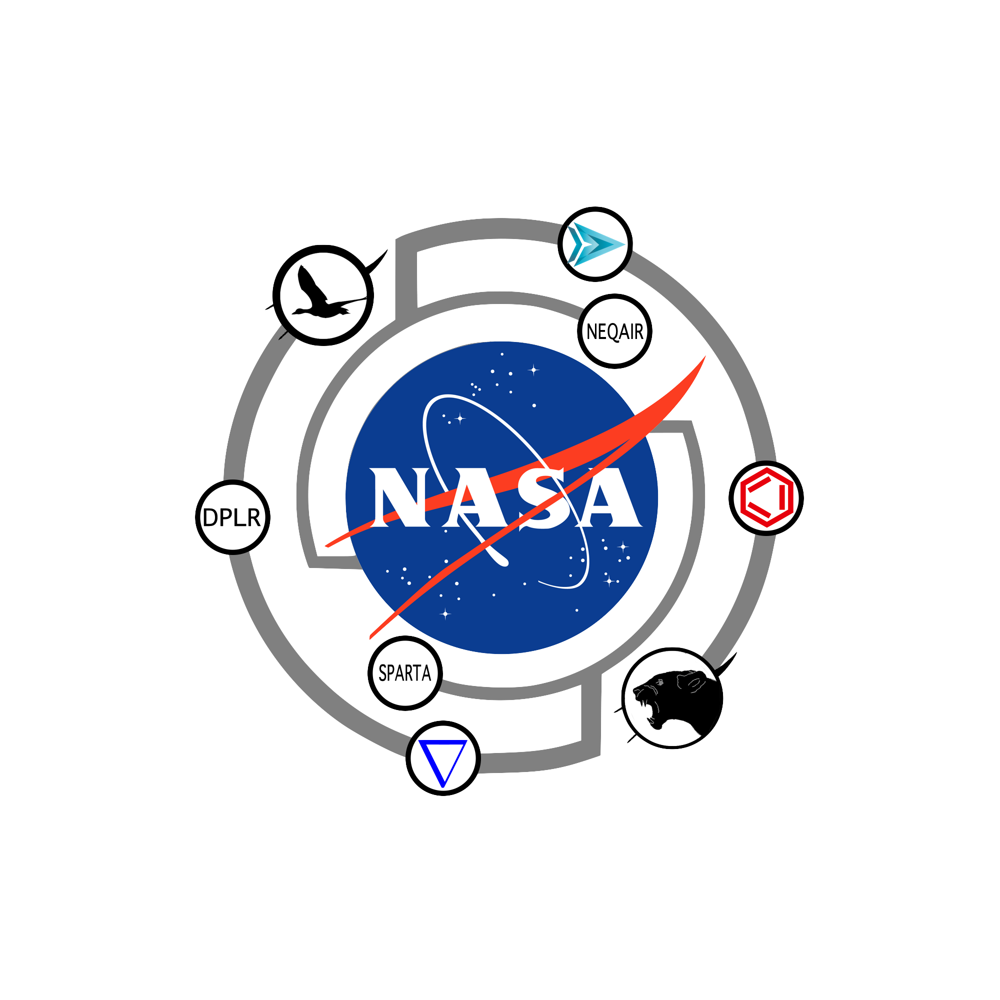
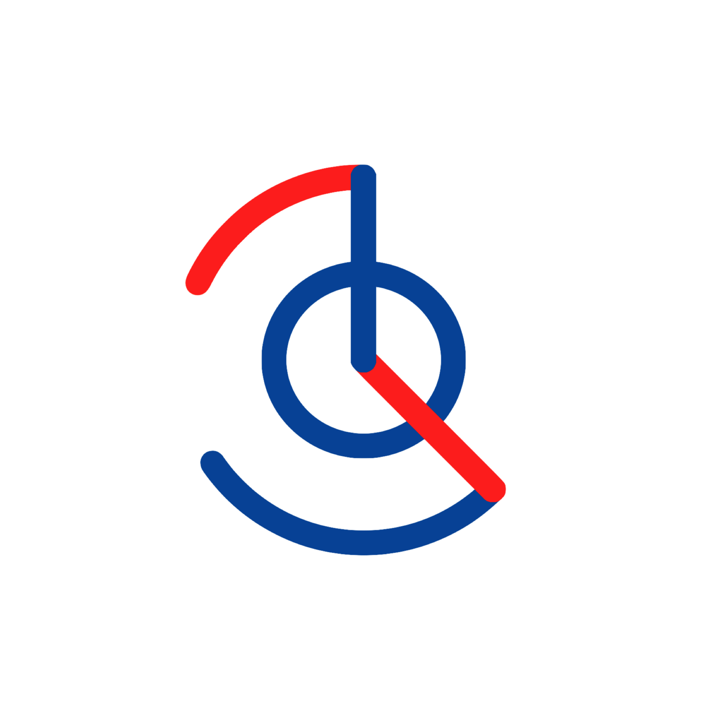

arcjetCV
Computer vision platform that automates recession, shock standoff, and instrumentation analysis from arc jet footage.

Mission-ready software, data systems, and lab automation for test campaigns.
Machine learning pipelines that extract actionable results from complex high-enthalpy test campaigns.
Custom software ecosystems that connect mission design, materials modeling, and lab automation.
We build AI tooling that plugs into test facilities, streamlining operations while keeping missions aligned from concept through validation.

Computer vision platform that automates recession, shock standoff, and instrumentation analysis from arc jet footage.

Custom photogrammetry rig that captures 3D geometries of test articles in minutes with sub-millimeter accuracy.

Open-source 3D Slicer extension that brings Segment Anything to volumetric tomography workflows.

Python framework that links mission design, material response, and optimization to accelerate TPS development.

1D CNN that segments multi-test video archives to pinpoint events worth post-processing across long campaigns.

Big-data Efficient and Automated Science Transfer platform modernizing arc jet data stewardship for NASA Ames.
We pair domain expertise with modern software practices to streamline complex aerospace workflows.
Design, train, and deploy models that unlock high-fidelity insights from noisy thermal and optical data.
Connect lab instrumentation, mission simulators, and design toolkits into cohesive, automated pipelines.
Build tools to analyze and validate thermal protection materials with traceable, data-backed decision support.
Flying Squirrel is an aerospace engineering company focused on hypersonics and thermal protection systems. We combine test-facility experience, mission design, and software engineering to solve complex re-entry challenges.
We work at the intersection of research and deployment: turning advanced algorithms into production tools, instrumenting labs for automated data capture, and designing material characterization workflows.
From NASA research collaborations to partnerships with leading institutes, we support programs where precision, repeatability, and traceable insight are critical.
Peer-reviewed publications and NASA technical outputs that underpin our methodologies.
Authors: Federico Semeraro, Alexandre Quintart, Sergio Fraile Izquierdo, Joseph C. Ferguson
Published in: SoftwareX
View PublicationAuthors: Alexandre Quintart, Magnus Haw, Federico Semeraro
Published in: Journal of Spacecraft and Rockets
View PublicationAuthors: Alexandre Quintart, Magnus A. Haw
Presented at: AIAA SCITECH Forum
View PublicationAuthors: Koushik Chennakesavan, Magnus A. Haw, Alexandre Quintart
Published in: AIAA SCITECH Forum
View PublicationAuthors: Alexandre Quintart, Magnus Haw
Published in: NASA NTRS (Presentation)
View PublicationAuthors: Alexandre Quintart, Magnus Haw, Sebastian Colom
Published in: NASA NTRS (Presentation)
View PublicationAuthors: Alexandre Quintart, Magnus Haw, Sebastian Colom
Published in: NASA NTRS (Presentation)
View PublicationAuthors: Arnaud Borner, Magnus A. Haw, Sebastian V. Colom, Alexandre Quintart
Published in: NASA NTRS (Abstract)
View PublicationAuthors: Alexandre Quintart, Magnus A. Haw
Published in: NASA NTRS (Poster)
View PublicationMission programs that have used our tools to support thermal protection analysis and key engineering decisions.
Direct line for rapid project coordination.
36 Rue du Bourg
1946 Bourg-St-Pierre
Switzerland